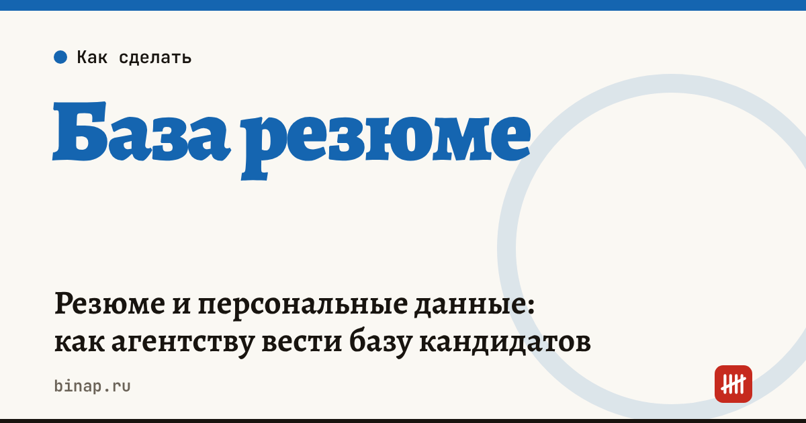

Резюме и персональные данные: как агентству вести базу кандидатов

База кандидатов — главный актив кадрового агентства, и она целиком состоит из персональных данных: ФИО, телефоны, опыт работы, зарплатные ожидания, иногда фото. Агентство собирает их в свою базу и передаёт заказчикам — значит, по закону № 152-ФЗ оно оператор персональных данных. Разбираем, что нужно, чтобы работать с резюме без нарушений.
Коротко
- Чтобы хранить резюме в своей базе и предлагать кандидата разным заказчикам, нужно согласие кандидата на обработку и на передачу данных третьим лицам.
- Согласие оформляют отдельным документом — например, отдельной галочкой с текстом согласия в форме отклика, а не строкой в пользовательском соглашении.
- Резюме, скачанное с сайта вакансий, не даёт права хранить его бессрочно и рассылать кому угодно.
- Агентство как оператор должно уведомить Роскомнадзор об обработке данных и описать в политике, как оно их защищает.
- Без согласия на передачу показывайте заказчику обезличенное резюме: опыт и навыки без ФИО и контактов.
Сроки, изменения и разборы для ИП и самозанятых — каждое утро в Telegram и MAX. Подпишитесь, чтобы не пропустить.
Откуда приходят данные и что нужно
| Источник | Что нужно |
|---|---|
| Кандидат откликнулся на вакансию агентства | согласие в форме отклика: цели, срок, передача заказчикам |
| Резюме найдено на сайте вакансий | связаться с кандидатом и получить согласие до передачи заказчику |
| Рекомендация знакомых | согласие самого кандидата до внесения в базу |
| Кандидат пришёл на собеседование | согласие на бумаге или по ссылке перед интервью |
Как вести базу: пошагово
- Добавьте согласие в форму отклика — отдельный текст: какие данные, зачем (подбор вакансий), кому передаются (потенциальным работодателям), срок хранения и как отозвать.
- Укажите срок хранения — например, год после последнего контакта — и удаляйте или продлевайте согласие по истечении срока.
- Перед отправкой резюме заказчику проверьте, есть ли согласие на передачу. Если нет — отправьте обезличенную версию.
- Пропишите в договоре с заказчиком, что он использует данные кандидатов только для решения о найме и не передаёт дальше. Что ещё включить в договор — в статье Договор кадрового агентства с заказчиком.
- Уведомите Роскомнадзор и опубликуйте на сайте политику обработки персональных данных.
- Ограничьте доступ к базе: у каждого рекрутера свой вход в CRM, выгрузка всей базы — только у руководителя.
Пример: стоимость базы
Расчёт редакции на условных цифрах. В базе 3 000 кандидатов, из них 300 с актуальным согласием на передачу. Агентство закрывает 4 вакансии в месяц по 60 000 ₽, и половину кандидатов находит в своей базе, а не через платный поиск на сайтах вакансий. Каждый такой кандидат экономит часы рекрутера и деньги на доступ к резюме. Поэтому база с действующими согласиями ценнее, чем большая база, где кандидатов нельзя законно показать заказчику.
Сколько зарабатывает агентство при разной доле «своих» кандидатов — посчитайте в калькуляторе дохода кадрового агентства. Что нельзя загружать в нейросети при разборе резюме — в статье ИИ и персональные данные. Все материалы — в разделе Кадровым агентствам.
Частые вопросы
Можно ли переслать заказчику резюме с сайта вакансий? Только с согласия кандидата на передачу. Безопаснее сначала связаться с кандидатом, рассказать о вакансии и получить согласие.
Сколько можно хранить резюме? Столько, сколько указано в согласии и нужно для цели обработки. Бессрочное хранение «на всякий случай» закон не одобряет.
Можно ли разбирать резюме с помощью нейросети? Можно, если убрать ФИО, телефоны и другие данные, по которым можно узнать человека, или использовать сервис, с которым у агентства есть договор об обработке данных.